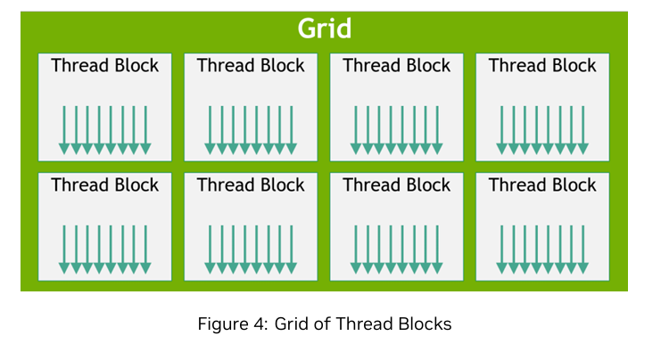
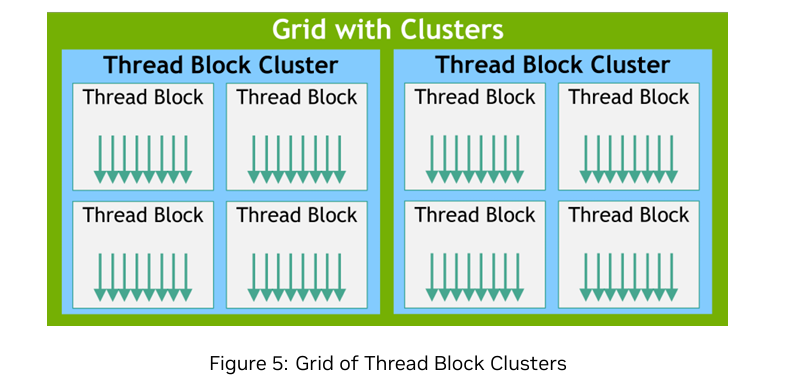
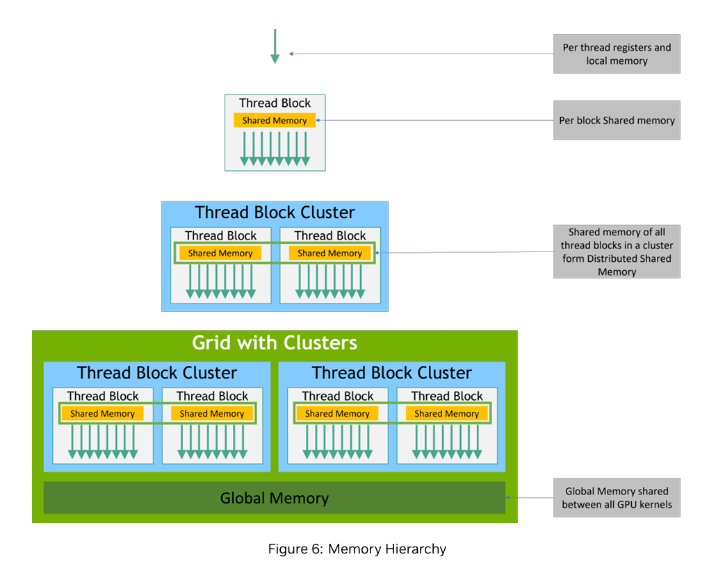
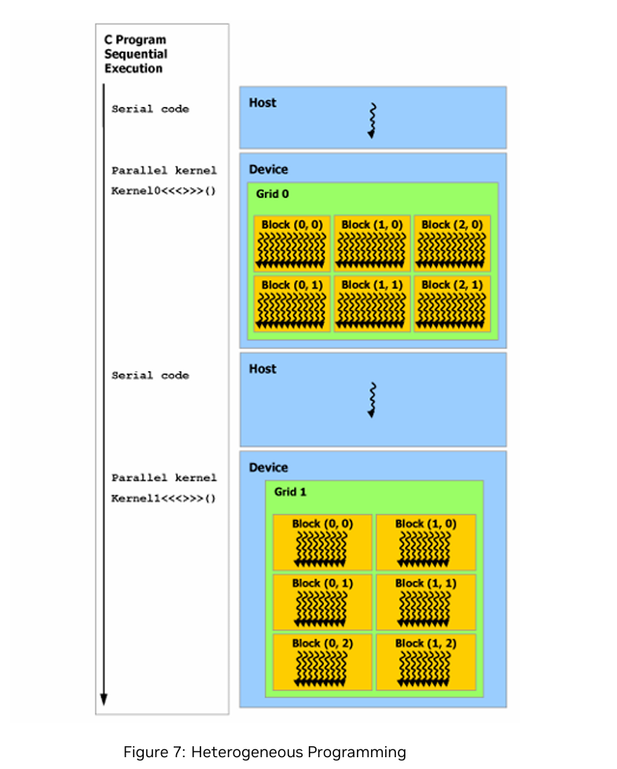

CUDA01:Programming Model
（所有内容均基于NVIDIA官方CUDA Document。本次内容包含原文档Chapter5）
I.Kernels
CUDA C++通过允许程序员定义称为内核的C++函数，扩展了C++的功能。当这些内核被调用时，它们将由$N$个不同的CUDA线程并行执行$N$次，而常规的C++函数则仅在单线程中执行。
一个kernel 使用 __global__ 声明修饰符定义，而给定内核调用中执行该内核的 CUDA 线程数量则通过新的 <<<...>>> 执行配置语法指定。执行该内核的每个线程都会获得一个唯一的线程 ID，该 ID可通过内置变量在内核内部访问。
例如，以下示例代码使用内置变量threadIdx，将两个大小为 $N$ 的向量 A 和 B 相加，并将结果存储到向量 C 中。
// Kernel definition
__global__ void VecAdd(float* A, float* B, float* C)
{
int i = threadIdx.x;
C[i] = A[i] + B[i];
}
int main()
{
...
// Kernel invocation with N threads
VecAdd<<<1, N>>>(A, B, C);
...
}
在这里，每个执行VecAdd()的$N$个线程都会执行一次成对加法运算。
II.Thread Hierarchy
为了方便起见，threadIdx 是一个 3 元素向量，因此可以使用一维、二维或三维线程索引来标识线程，从而形成一维、二维或三维的线程块，称为a thread block。这为在域（如向量、矩阵或体积）中的元素之间调用计算提供了一种自然的方式。
线程的索引与其线程 ID 之间存在直接对应关系：对于一维块，它们是相同的；对于二维块（尺寸为 $(Dx, Dy)$），索引为 $(x, y)$ 的线程的线程 ID 是 $(x + y Dx)$；对于三维块（尺寸为 $(Dx, Dy, Dz)$），索引为 $(x, y, z)$ 的线程的线程 ID 是 $(x + y Dx + z Dx Dy)$；
例如，以下代码将两个大小为 $N\times N$ 的矩阵 A 和 B 相加，并将结果存储到矩阵 C 中。
// Kernel definition
__global__ void MatAdd(float A[N][N], float B[N][N], float C[N][N])
{
int i = threadIdx.x;
int j = threadIdx.y;
C[i][j] = A[i][j] + B[i][j];
}
int main()
{
...
// Kernel invocation with one block of N * N * 1 threads
int numBlocks = 1;
dim3 threadsPerBlock(N, N);
MatAdd<<<numBlocks, threadsPerBlock>>>(A, B, C);
...
}
每个线程块的线程数量存在限制，因为同一线程块中的所有线程都应驻留在同一个流式多处理器核心上，并必须共享该核心的有限内存资源。在当前的GPU上，一个线程块最多可包含1024个线程。
然而，一个内核可以由多个形状相同的线程块执行，因此总的线程数等于每个块的线程数乘以块的数量。
块被组织成一维、二维或三维的线程块网格，如图4所示。网格中的线程块数量通常由被处理数据的大小决定，而该数据量通常超过系统中的处理器数量。

块中线程数和网格中块数在<<<...>>>语法中指定的值可以是int类型或dim3类型。二维块或网格可以像上例中所示那样指定。
网格中的每个块都可以通过内核中内置的 blockIdx 变量访问的一维、二维或三维唯一索引进行标识。块的维度可以通过内核中内置的 blockDim 变量访问。
在之前的 MatAdd() 示例基础上扩展以处理多个块，代码如下所示:
// Kernel definition
__global__ void MatAdd(float A[N][N], float B[N][N], float C[N][N])
{
int i = blockIdx.x * blockDim.x + threadIdx.x;
int j = blockIdx.y * blockDim.y + threadIdx.y;
if (i < N && j < N)
C[i][j] = A[i][j] + B[i][j];
}
int main()
{
...
// Kernel invocation
dim3 threadsPerBlock(16, 16);
dim3 numBlocks(N / threadsPerBlock.x, N / threadsPerBlock.y);
MatAdd<<<numBlocks, threadsPerBlock>>>(A, B, C);
}
线程块大小为16×16（256个线程），尽管在此情况下是任意选择的，但这是一个常见的选择。网格的创建方式与之前相同，确保每个矩阵元素对应一个线程。为了简化起见，本例假设每个维度中网格的线程数能被该维度中块的线程数整除，尽管实际情况不必如此。
线程块必须能够独立执行。必须能够以任何顺序、并行或串行方式执行块。这种独立性要求允许线程块以任何顺序调度，并跨任意数量的核心，如图3(CUDA00)所示，从而使程序员能够编写随核心数量扩展的代码。
块内的线程可以通过共享内存共享数据，并通过同步执行来协调内存访问。更准确地说，可以通过调用内核中的__syncthreads()内置函数来指定同步点；__syncthreads()作为一个屏障，所有块中的线程都必须在此屏障处等待，直到任何一个线程被允许继续执行。Shared memory提供了一个使用共享内存的示例。除了__syncthreads()外，协作组API还提供了一组丰富的线程同步原语。
为了实现高效协作，共享内存预计将以低延迟内存的形式靠近每个处理器核心（类似于 L1 缓存），而 __syncthreads() 函数预计将非常轻量级。
2.1.Thread Block Clusters
随着NVIDIA计算能力9.0的引入，CUDA编程模型引入了一个可选的层次结构级别，称为线程块集群，由线程块组成。类似于线程块中的线程在流式多处理器上被保证同时调度，集群中的线程块也在GPU处理集群（GPC）上被保证同时调度，该GPC位于GPU中。
与线程块类似，集群也组织成一维、二维或三维的线程块集群网格，如图 5 所示。集群中的线程块数量可由用户定义，且 CUDA 中支持的最大集群大小为 8 个线程块，作为可移植的集群大小。
注意，对于 GPU 硬件或 MIG 配置，如果集群大小过小无法支持 8 个多处理器，则最大集群大小将相应减少。这些较小的配置的识别方式为： 需注意，对于硬件或MIG配置过小而无法支持8个多处理器的场景，最大集群大小将相应缩减。这些较小配置的识别，以及支持线程块集群大小超过8的较大配置的识别，是架构特定的，可通过cudaOccupancyMaxPotentialClusterSize API进行查询。

注意：在使用集群支持启动的内核中，gridDim变量仍表示以线程块数量为单位的大小，以保持兼容性。集群中块的排名可通过集群组 API 获取。
线程块集群可以在内核中通过编译时内核属性使用__cluster_dims__(X,Y,Z)或使用CUDA内核启动API cudaLaunchKernelEx来启用。下面的示例展示了如何使用编译时内核属性启动一个集群。使用内核属性的集群大小在编译时固定，然后可以使用经典的 <<< , >>> 启动内核。如果内核使用编译时集群大小，则在启动内核时无法修改集群大小。
// Kernel definition
// Compile time cluster size 2 in X-dimension and 1 in Y and Z dimension
__global__ void __cluster_dims__ (2, 1, 1) cluster_kernel(float *input, float* output)
{
}
int main()
{
float *input, *output;
// Kernel invocation with compile time cluster size
dim3 threadsPerBlock(16, 16);
dim3 numBlocks(N / threadsPerBlock.x, N / threadsPerBlock.y);
// The grid dimension is not affected by cluster launch, and is still enumerated
// using number of blocks
// The grid dimension must be a multiple of cluster size.
cluster_kernel<<<numBlocks, threadsPerBlock>>>(input, output);
}
线程块集群大小也可以在运行时设置，内核可以使用CUDA的内核启动API cudaLaunchKernelEx 启动。下面的代码示例展示了如何使用可扩展API启动集群内核
// Kernel definition
// No compile time attribute attached to the kernel
__global__ void cluster_kernel(float *input, float* output)
{
}
int main()
{
float *input, *output;
dim3 threadsPerBlock(16, 16);
dim3 numBlocks(N / threadsPerBlock.x, N / threadsPerBlock.y);
// Kernel invocation with runtime cluster size
{
cudaLaunchConfig_t config = {0};
// The grid dimension is not affected by cluster launch, and is still enumerated
// using number of blocks.
// The grid dimension should be a multiple of cluster size.
config.gridDim = numBlocks;
config.blockDim = threadsPerBlock;
cudaLaunchAttribute attribute[1];
attribute[0].id = cudaLaunchAttributeClusterDimension;
attribute[0].val.clusterDim.x = 2; // Cluster size in X-dimension
attribute[0].val.clusterDim.y = 1;
attribute[0].val.clusterDim.z = 1;
config.attrs = attribute;
config.numAttrs = 1;
cudaLaunchKernelEx(&config, cluster_kernel, input, output);
}
}
在具有计算能力 9.0 的 GPU 中，集群中的所有线程块都保证被调度到单个 GPU 处理集群 (GPC) 上，并允许集群中的线程块使用集群组 API cluster.sync() 进行硬件支持的同步。Clustergroup 集群组还提供了成员函数，用于以线程数或块数为单位查询集群组大小，分别使用num_threads()和num_blocks() API。线程或块在集群组中的排名可分别使用dim_threads()和dim_blocks() API查询。
属于同一集群的线程块可以访问分布式共享内存。集群中的线程块具有读取、写入以及对分布式共享内存中任何地址执行原子操作的能力。分布式共享内存提供了一个在分布式共享内存中执行直方图的示例。
2.2.Blocks as Clusters
使用 __cluster_dims__ 时，启动的集群数量是隐式保存的，只能手动计算。
__cluster_dims__((2, 2, 2)) __global__ void foo();
// 8x8x8 clusters each with 2x2x2 thread blocks.
foo<<<dim3(16, 16, 16), dim(1024, 1, 1)>>>();
在上例中，内核以 16x16x16 个线程块的网格形式启动，实际上是 8x8x8 个集群的网格。
或者，通过另一个编译时内核属性 __block_size__，可以显式配置线程块集群的数量来启动网格。
// Implementation detail of how many threads per block and blocks per cluster
// is handled as an attribute of the kernel.
__block_size__((1024, 1, 1), (2, 2, 2)) __global__ void foo();
// 8x8x8 clusters.
foo<<<dim3(8, 8, 8)>>>();
__block_size__ 需要两个字段，每个字段都是一个包含 3 个元素的元组。第一个元组表示块尺寸，
第二个元组表示集群大小。如果未传递第二个元组，则假设其值为 (1,1,1)。要指定流，必须将 1 和 0 作为第二个和第三个参数传递给 <<<>>>，最后传递流。传递其他值将导致未定义的行为。
请注意，同时指定__block_size__和__cluster_dims__的第二个元组是违法的。当指定__block_size__的第二个元组时，这意味着“块作为集群”已启用，编译器会将<<<<>>>中的第一个参数识别为集群数量，而不是线程块数量。
III.Memory Hierarchy
CUDA线程在执行过程中可能访问多个内存空间中的数据，如图6所示。每个线程拥有私有局部内存。每个线程块拥有共享内存，该共享内存对块内的所有线程可见，且与块具有相同的生命周期。线程块集群中的线程块可以对彼此的共享内存执行读取、写入和原子操作。所有线程均可访问相同的全局内存。

此外，还有两个仅供读取的内存空间可供所有线程访问：常量内存空间和纹理内存空间。全局内存、常量内存和纹理内存空间针对不同的内存使用场景进行了优化。纹理内存还提供了不同的寻址模式，以及针对某些特定数据格式的数据过滤功能。
全局、常量和纹理内存空间在同一应用程序启动内核时是持久的。
IV.Heterogeneous Programming
如图7所示，CUDA编程模型假设CUDA线程在物理上独立的设备上执行，该设备作为运行C++程序的主机的协处理器。例如，当内核在GPU上执行而C++程序的其余部分在CPU上执行时，就是这种情况。

CUDA 编程模型还假设主机和设备各自维护自己的独立内存空间在 DRAM 中，分别称为主机内存和设备内存。因此，一个程序通过调用 CUDA 运行时（在编程接口中描述）来管理对内核可见的全局、常量和纹理内存空间。这包括设备内存的分配和释放，以及纹理内存的分配和释放。因此，程序通过调用 CUDA 运行时（在编程接口中描述）来管理对内核可见的全局、常量和纹理内存空间。这包括设备内存的分配和释放，以及主机与设备内存之间的数据传输.
统一内存提供管理内存，用于连接主机和设备内存空间。管理内存可被系统中的所有CPU和GPU访问，作为单一、一致的内存映像，具有共同的地址空间。这一功能使设备内存的超额分配成为可能，并能大大简化应用程序移植任务，因为无需显式地在主机和设备上镜像数据。
V.Asynchronous SIMT Programming Model
在CUDA编程模型中，线程是执行计算或内存操作的最低抽象级别。从基于NVIDIA Ampere GPU架构的设备开始，CUDA编程模型通过异步编程模型为内存操作提供加速。异步编程模型定义了异步操作相对于CUDA线程的行为。
异步编程模型定义了异步屏障（AsynchronousBarrier）在CUDA线程之间进行同步的行为。该模型还解释并定义了如何使用cuda::memcpy_async在GPU上进行计算时，异步地将数据从全局内存中移动。
5.1.Asynchronous Operations
异步操作是指由CUDA线程发起并以异步方式执行的操作，仿佛由另一个线程执行。在结构良好的程序中，一个或多个CUDA线程与异步操作进行同步。发起异步操作的CUDA线程不必是同步线程之一。
此类异步线程（即“假设线程”）始终与发起异步操作的 CUDA 线程相关联。异步操作使用同步对象来同步操作的完成。此类同步对象可以由用户显式管理（例如，cuda::memcpy_async），或在库中隐式管理（例如，cooperative_groups::memcpy_async）。
同步对象可以是 cuda::barrier 或 cuda::pipeline。这些同步对象可在不同线程作用域中使用。
同步对象定义了可使用同步对象与异步操作进行同步的线程集合。下表定义了 CUDA C++ 中可用的线程作用域以及可进行同步的线程。范围定义了可以使用同步对象与异步操作进行同步的线程集合。
| Thread Scope | Description |
|---|---|
cuda::thread_scope::thread_scope_thread |
Only the CUDA thread which initiated asynchronous operations synchronizes. |
cuda::thread_scope::thread_scope_block |
All or any CUDA threads within the same thread block as the initiating thread synchronizes. |
cuda::thread_scope::thread_scope_device |
All or any CUDA threads in the same GPU device as the initiating thread synchronizes. |
cuda::thread_scope::thread_scope_system |
All or any CUDA or CPU threads in the same system as the initiating thread synchronizes. |
这些线程作用域作为标准 C++ 的扩展实现于 CUDA 标准 C++ 库中。
VI.Compute Capability
设备的计算能力由版本号表示，有时也称为其“SM version”。该版本号标识GPU硬件支持的功能，并在应用程序运行时用于确定当前GPU上可用的硬件功能和/או指令。
计算能力由主要版本号X和次要版本号Y组成，并以X.Y表示。